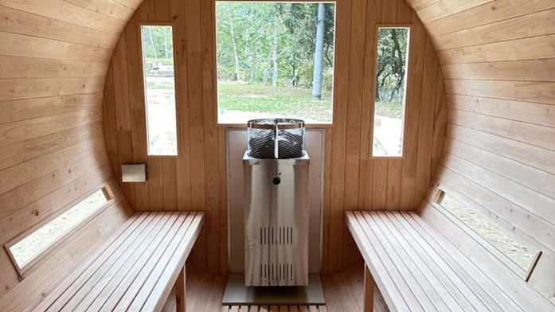
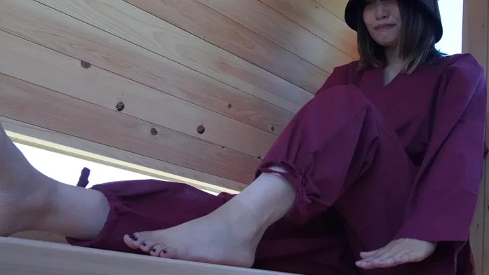

「バレルサウナの正しい使い方や楽しみ方がわからない」「初めてでも快適に利用できる方法を知りたい」など、お悩みではありませんか？バレルサウナは、自宅や施設で気軽に本格的なサウナ体験を楽しめる人気のアイテムです。しかし適切な使い方を知らない場合、十分にサウナのよさを実感できなかったり、長持ちさせられなかったりする可能性があります。
ここでは、バレルサウナの基本的な仕組みや初心者向けの正しい使い方、さらに最大限楽しむためのテクニックを詳しく解説します。加えて、長期間快適に使うためのメンテナンス方法も紹介します。
高品質な国産ひのきを使用したバレルサウナを販売するRink SAUNAが提供する情報です。読み終えるころには、バレルサウナの魅力を最大限に引き出す方法がわかり、より豊かなリラックスタイムを過ごせるようになるでしょう。
バレルサウナの基本：初めてでも安心の使い方と楽しみ方

バレルサウナの魅力と特徴を解説します。以下に特徴をまとめました。
| 特徴 | 説明 |
|---|---|
| 形状 | 樽型・スクエア型 |
| 素材 | ひのき・レッドシダー・パイン・ツガなど |
| 設置場所 | 庭、ウッドデッキ、プールサイド、ヴィラなど |
バレルサウナとは、その名の通り樽型のサウナのことです。そのユニークな形状が目を引きますが、魅力は見た目だけではありません。サウナの本場フィンランドで古くから親しまれてきた伝統的なサウナであり、近年日本でも人気が高まっています。特に、国産ひのきを使用したバレルサウナは、木の温もりと香りに包まれながら、特別なリラックスタイムを過ごせると注目を集めています。
バレルサウナの最大の特徴は、そのコンパクトさです。一般的なサウナ小屋に比べて設置スペースが少なく、庭やベランダなどにも設置しやすいというメリットがあります。
さらにバレルサウナは、設置場所の自由度が高く、水平の取れた平地であれば自分の好きな場所でサウナを楽しめます。また、木の温もりと香りも大きな魅力です。使用後は適切なお手入れをすることで、長く楽しむことが可能です。
初心者向け！バレルサウナの正しい使い方と注意点
初めてのバレルサウナ利用時に必要な準備や正しい使い方を学び、安全に楽しみましょう。以下は基本的な使用手順です。
まず基本として、十分な水分補給を忘れずに行いましょう。脱水症状を防ぐために、サウナに入る前・サウナ中・サウナ後と、こまめな水分摂取を心がけてください。
次に、適切な服装です。水着やタオルを着用し、アクセサリー類は外しましょう。熱伝導率の高い金属はやけどの危険があります。サウナ室内では、床やベンチ座面にバスマットやサウナマットを敷くと快適に過ごすことが可能です。
いよいよサウナに入ります。最初は入り口の近くなど低めの温度箇所から始め、徐々にストーブの近くに移動するのがおすすめです。無理せず自分のペースで楽しみましょう。サウナの基本は、8分～12分程度入ったら、水風呂や外気浴で体を冷やすことです。この温冷交代浴を数回繰り返すことで、心地よく過ごせます。
安全にバレルサウナを楽しむためには注意点もいくつかあります。飲酒後や体調不良時の利用は避けましょう。またサウナ室内の温度が高すぎると感じる場合は、無理せず温度を下げるか、サウナ室から出て休憩してください。長時間の利用も控えましょう。
使用後は、サウナ室内の換気を行い、濡れたタオルやマットなどは乾燥させます。適切なお手入れを行うことで、バレルサウナを長く楽しむことが可能です。
バレルサウナを最大限に楽しむための応用テクニック

バレルサウナの基本と楽しみ方をマスターしたら、次はさらなるレベルアップを目指しましょう。ここでは、バレルサウナ体験をより豊かにする応用テクニックをご紹介します。初めてのバレルサウナ利用時に必要な準備や正しい使い方を学んだあとは、これらのテクニックを試して、あなただけの特別なサウナ時間を見つけてみてください。
| テクニック | 説明 | 効果 |
|---|---|---|
| アロマオイル | 数滴のアロマオイルをストーブの上の水に垂らす | くつろぎを感じやすい雰囲気を高めたり、気分をリフレッシュさせたりする |
| 熱波 | タオルやロウリュ用のうちわで仰ぐことで体感温度を上げる | 心地よく温まる |
| セルフマッサージ | 身体を優しくマッサージする | リラックスしやすい |
| 瞑想 | 目を閉じて瞑想する | 心を落ち着かせ、穏やかな気分を高める |
| 水分補給 | こまめな水分補給 | 脱水症状予防 |
ロウリュは、熱したサウナストーンに水をかけて水蒸気を発生させることで、体感温度を上昇させるフィンランドの伝統的なサウナ入浴法です。
また、アロマオイルを加えることで、香りによるくつろぎを感じやすい雰囲気も期待できます。セルフマッサージは、筋肉の緊張をやさしくほぐして心地よさを感じやすくし、体が温まりやすくなります。
使用後は、サウナ室をよく換気し、水分を拭き取ってください。適切なメンテナンスを行うことで、バレルサウナを長く楽しめます。
バレルサウナを長持ちさせる！使用後の適切なお手入れ方法
バレルサウナの楽しみ方を最大限に味わうためには、使用後の適切なお手入れが基本です。丁寧なケアを継続することで、より長く快適にバレルサウナを利用できます。初めてのバレルサウナ利用時には、正しい使い方と合わせて、お手入れ方法も確認しておきましょう。以下にお手入れの方法をまとめました。
まず使用後は、サウナストーンに残った水滴を乾燥させ、カビの発生を防ぎます。内部の湿気を十分に換気することも大切です。ドアや窓を開放し、自然乾燥させることで、木材の劣化を遅らせることが可能です。
次に、ベンチや床などの木材部分は、乾いた布で水滴や汗を拭き取りましょう。汚れが気になる場合は、薄めた中性洗剤を使用し、水拭き後に乾拭きすることで清潔に保てます。
また季節毎にバレルサウナのバンドの緩みを確認し、スパナでボルトを調整します。
定期的なメンテナンスも、サウナを長持ちさせる秘訣です。
3～4年に一度、木材保護塗料を塗布することで、防水効果を高め、ひび割れや腐食を予防できます。また、サウナストーンは定期的に交換することで、効率的な加熱を維持できます。
これらの基本的なお手入れを心がけることで、バレルサウナを長く愛用し、その楽しみ方を存分に満喫することが可能です。
初めてのバレルサウナについてお悩みの方はRink SAUNAまで
日々の疲れを忘れ、特別なリラックスタイムを楽しめるバレルサウナを、自宅や施設に取り入れてみませんか。国産ひのきを贅沢に使用したRink SAUNAのバレルサウナは、香り高い木材が生み出す癒しの空間と、高い抗菌性・防虫性・消臭性を兼ね備えています。五感に刺さる設計で耐久性にも優れており、長く快適にお使いいただける点が大きな魅力です。
また、Rink SAUNAは迅速な納品と確実な納期順守を徹底しており、これまでRink SAUNAによる納期遅延は一切ありません。さらに、電気ヒーター・薪ストーブ・ガスストーブといった多様な熱源に対応しており、お客様のライフスタイルやビジネス用途に最適な選択が可能です。贅沢なリラックスタイムを自宅で楽しみたい方や、施設の付加価値を高めたい事業者の方におすすめです。
本格的なサウナ体験の手軽な実現にご興味がある方は、ぜひお気軽にお問い合わせください。